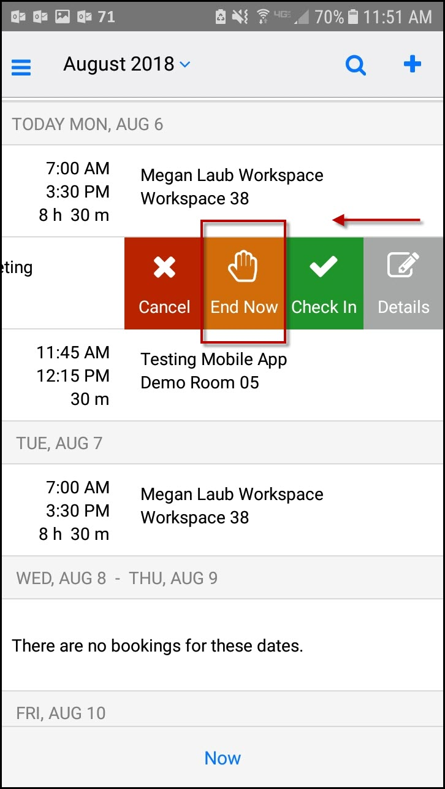
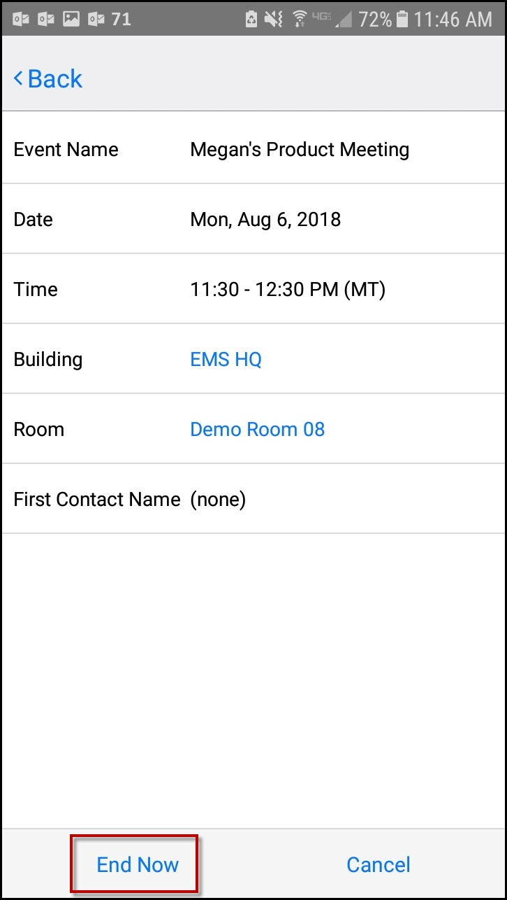

If your meeting has taken less than the reserved time, you can End a meeting Now to release the space for others.
You can End a Meeting early in one of two ways:
If you are able to end the meeting, an End Now option will appear. The meeting organizer or booking template determines whether this option is available.
The End Now button will only appear on non–Exchange-enabled templates.

Tap on the event and click Edit in the upper right-hand corner.
Click the End Now link in the lower left corner.

See Also: Invite People.